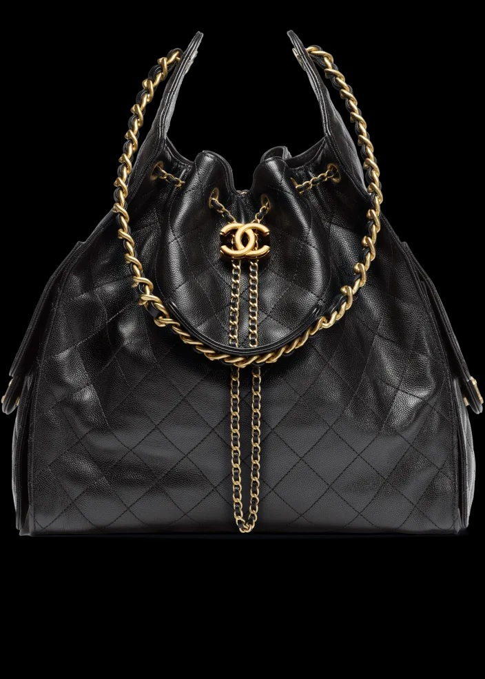
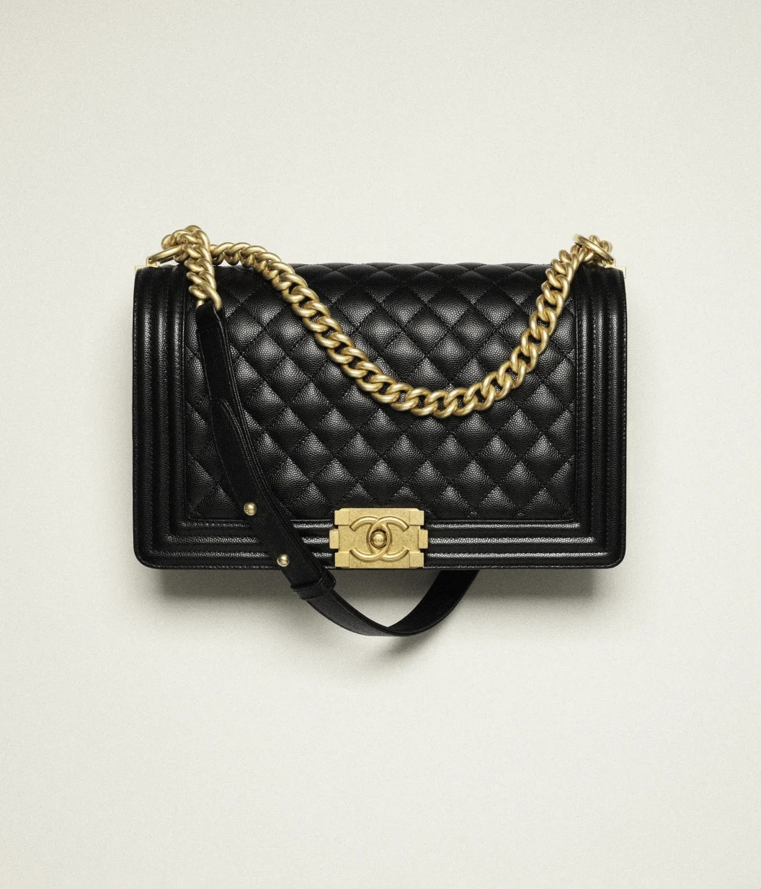
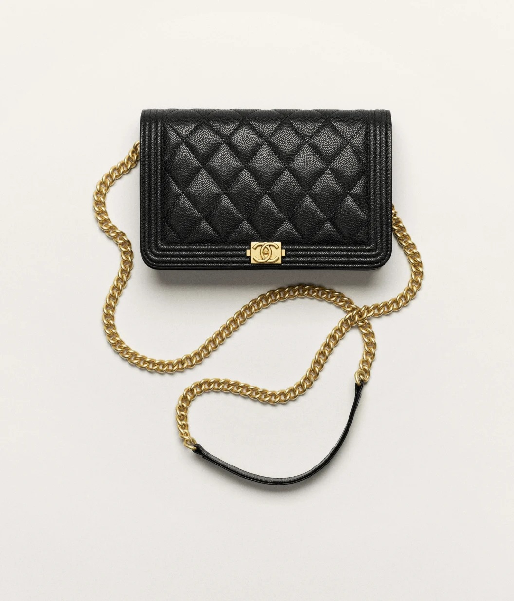

Fashion is so much more than just clothes and what is popular right now; it is a beautiful, living way to express exactly who you are, without ever having to speak a word. It draws from every corner of the world, from ancient traditions to bright new ideas, and it changes with each passing year while still holding onto pieces of the past that we love. Every colour, fabric, and choice tells a little part of your story, and there is no right or wrong way to do it — true style is simply what makes you feel happy, comfortable, and confident. It can be bold and loud, or soft and quiet, it can celebrate where you come from, or show the dreams you hold for the future, and it connects people everywhere through shared creativity and joy. Trends may come and go like the seasons, but the best fashion of all is the kind that feels like you, that treats our planet kindly, and that reminds you every day how wonderful it is to be exactly yourself.
Fashion is more than fabric and stitches—it’s living, breathing self-expression stitched into every hem, colour, and silhouette, shifting like the seasons yet rooted in the stories we carry. It moves effortlessly: soft vintage knits that hug like old memories, sharp tailored cuts that speak quiet confidence, flowing sustainable pieces that honour the earth, bold prints that shout joy without saying a word, and quiet, understated basics that feel like home. It’s not just what we wear—it’s how we stand taller, how we shine brighter, how we show the world exactly who we are, one outfit at a time, always evolving, always ours, never just a trend.



LOGIN HERE